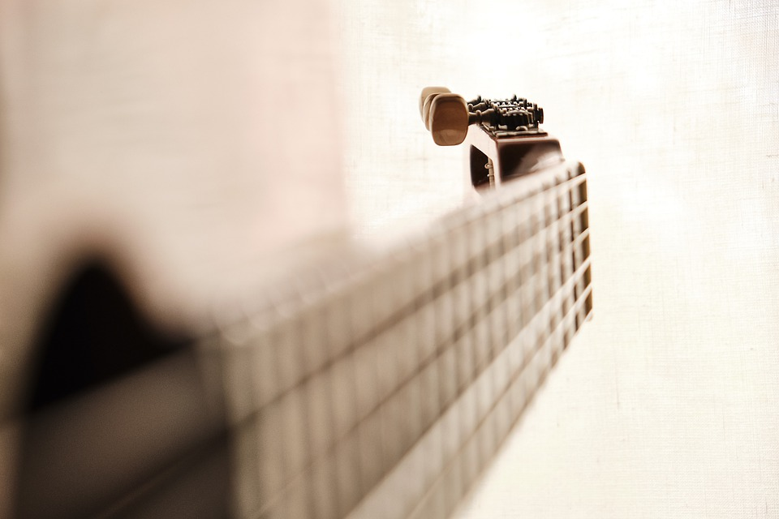

Méditer et Créer
Auteur-compositeur-interprète depuis une dizaine d’années, je partage mes textes avec cœur et engagement afin de promouvoir les valeurs collectives qui me portent et m’importent : la solidarité, l’entraide, l’amour, l’écologie et l’humanité.
Guitare en bandoulière, j’aime inviter la cohésion, l’amour, la fraternité et la coopération chez les personnes que je rencontre sur mon chemin. Les voyages intérieurs par la méditation de pleine conscience et les retraites que je fais régulièrement, les voyages que je fais en France et dans le monde, les rencontres du coin de la rue et celles du bout du monde sont mes sources d’inspiration.
J’aime écrire mes textes seul dans ma chambre ou dans la nature. Du mieux que je peux je me laisse faire, je laisse le texte, la mélodie, s’écrire et s’incarner à travers ma plume, ma guitare, mon corps. Ce que j’aime par-dessus tout c’est l’acte de création. Puiser à l’intérieur la nourriture à partager à l’extérieur.
Pour les concerts, je suis généralement accompagné de musiciens : guitariste, percussionniste, pianiste, violoncelliste afin de proposer un set à la fois acoustique, intimiste, authentique et inspiré.
Pour moi l’acte de création est souvent un prolongement de l’acte méditatif. Il est possible d’envisager d’intégrer des apports musicaux et créatifs en fonction des contextes d’interventions et de votre demande.
N'hésitez pas à me contacter pour toutes informations complémentaires.
